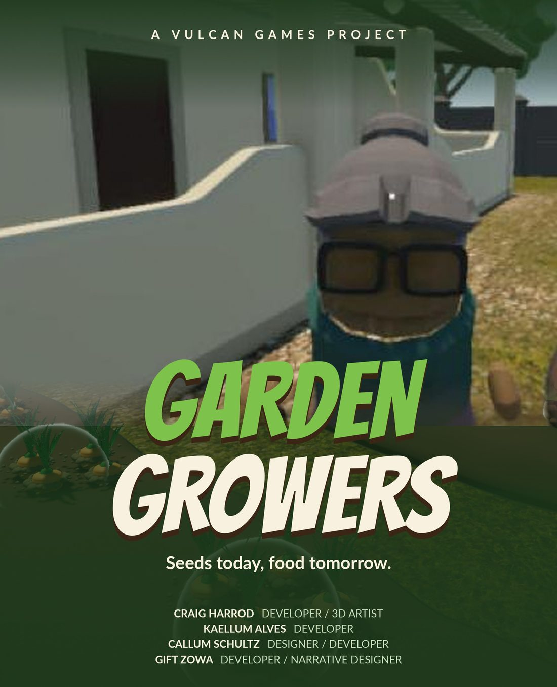
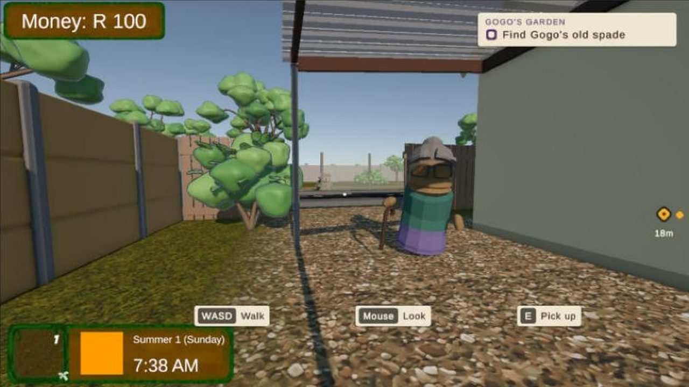
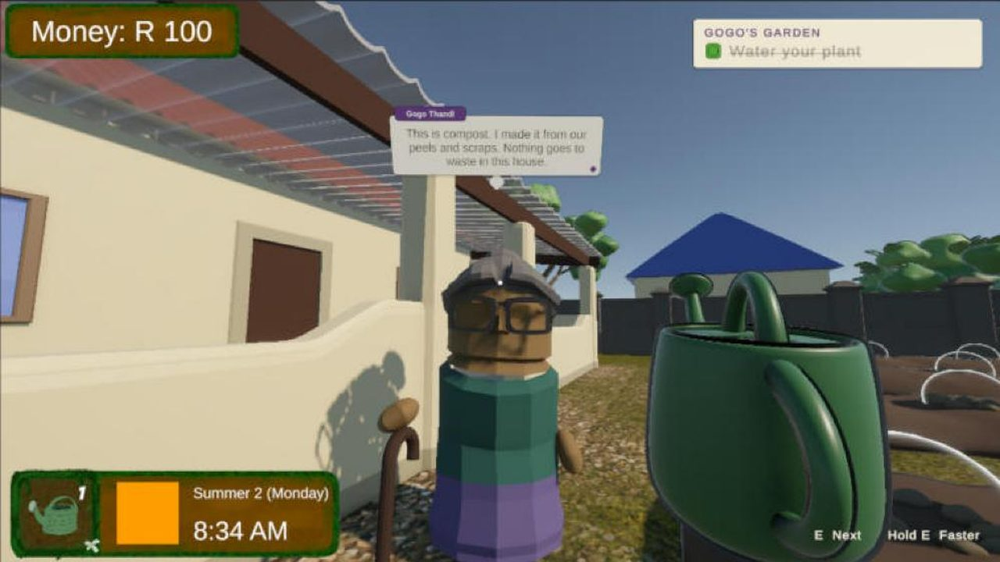
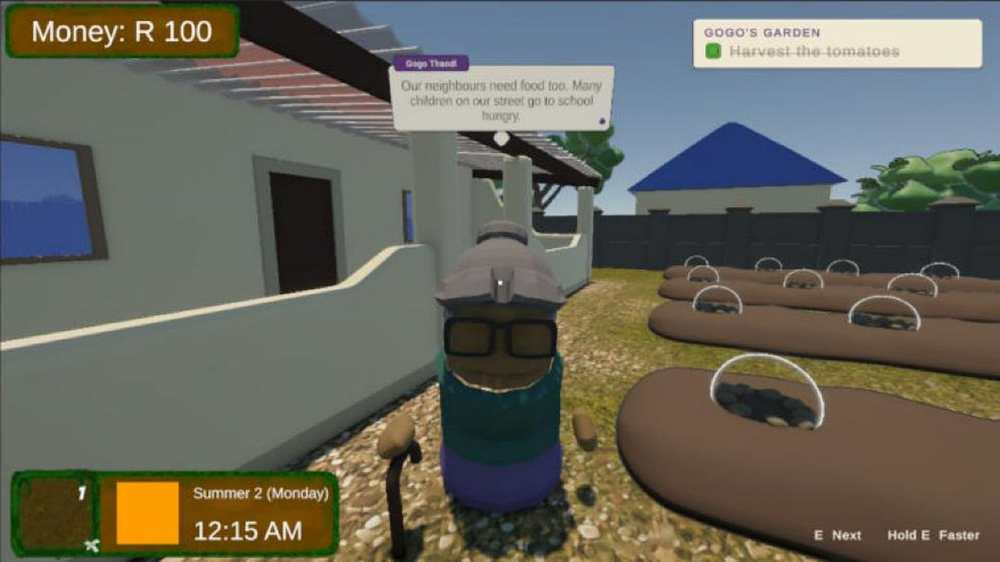
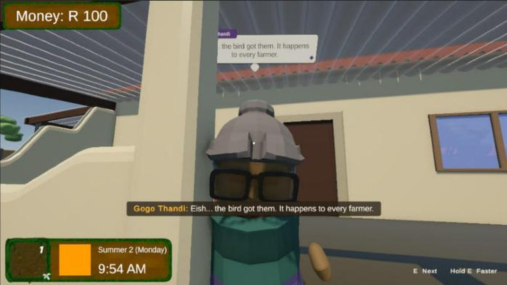
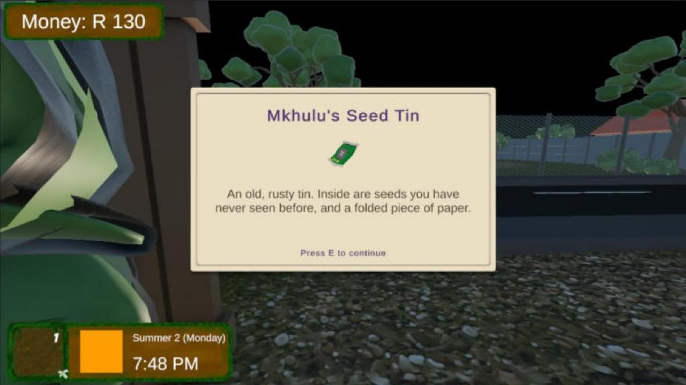
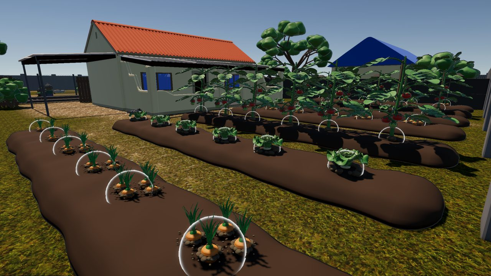
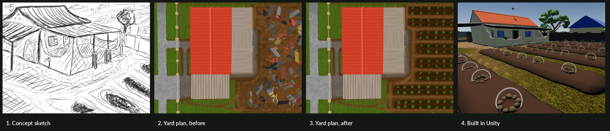
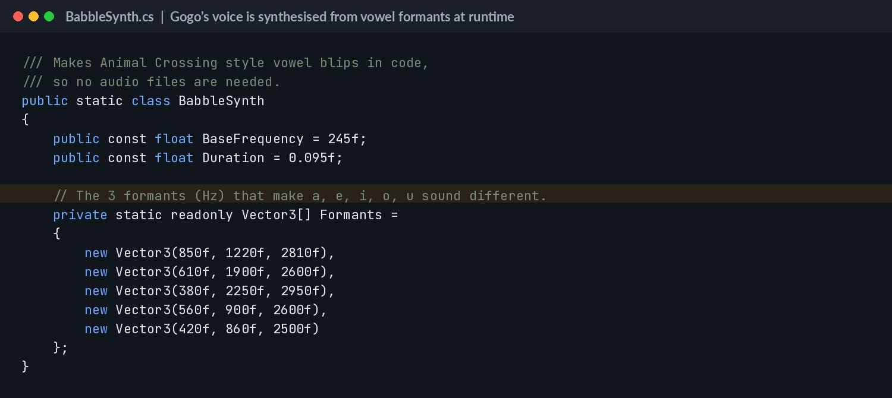

Garden Growers
Turn Gogo's empty backyard into a garden that feeds the whole street.
Windows build hosted on the team's itch.io page. Unzip and run GardenGrowers.exe.
The game
There is only a little mealie meal left, and food costs more every month. Gogo Thandi has an idea: grow food in the backyard. She teaches you to dig, plant, water and chase off the bird, then buys your harvest at a fair price for the neighbours. One night you find Mkhulu's old seed tin, and a new goal begins.
Single-player 3D first-person farming game for Windows PC. Dig, plant, water and protect your crops, then sell the harvest at Gogo's stall and reinvest in better seeds.
The brief
A team Work Integrated Learning project. The brief asked for a 3D serious game that tackles a real social problem in South Africa. We chose food insecurity in townships and aimed the game at 12 to 15 year olds.
Credits
- Craig Harrod · Developer / 3D Artist
- Kaellum Alves · Developer
- Callum Schultz · Designer / Developer
- Gift Zowa · Developer / Narrative Designer
- Built the full tutorial level: 17 guided steps plus a replant branch if a crop is lost.
- Built Gogo Thandi, the guide NPC: movement, gestures, speech bubbles with a typewriter effect, and a procedural babble voice made in code so no audio files were needed.
- Made the tutorial data-driven, so each step is a ScriptableObject the team can edit without touching code.
- Built Gogo's stall in the main level and the seed tin ending that sets up the next goal.
- Wrote the story, social problem, game specs and level progression sections of the design report.
What I used in my part of the project.
Why this project
This project shows I can work inside a team's codebase and own a whole slice of it. The tutorial had to teach 12 to 15 year olds the full game loop without walls of text, so Gogo explains each action in one short line and the game waits for the player to do it.
Screenshots






How it was made

